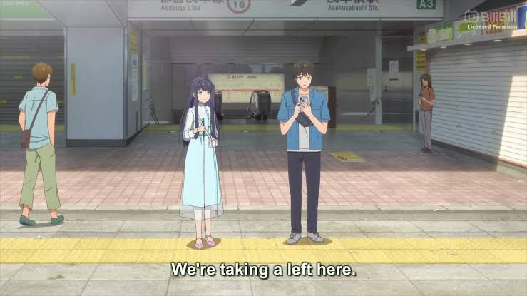

Mobilidade: o caminho começa na calçada
Antes de chegar ao ônibus, ao trabalho ou à escola, toda pessoa precisa atravessar a rua. É ali que a acessibilidade é testada primeiro.

A calçada é o primeiro meio de transporte
Quem anda a pé, usa cadeira de rodas, bengala ou andador depende de uma calçada contínua, sem degraus e com largura suficiente. No Brasil, a responsabilidade pela calçada costuma ser dividida entre o poder público e o dono do imóvel em frente, o que ajuda a explicar por que é tão comum encontrar trechos com desníveis, rampas improvisadas para carros e postes no meio da passagem.
A norma técnica ABNT NBR 9050 define medidas como a faixa livre para circulação, a inclinação máxima de rampas e a altura de elementos como orelhões e lixeiras. Seguir a norma não é luxo: uma única quina mal resolvida pode transformar um trajeto de cinco minutos em um desvio pela rua, disputando espaço com os carros.
Como ler o piso tátil
Aquele piso amarelo com relevo não é enfeite. Ele existe em dois tipos, definidos pela ABNT NBR 16537:
- Piso direcional, com faixas em linha, que indica o caminho a seguir, como um corrimão no chão.
- Piso de alerta, com pontos em relevo, que avisa sobre mudança de direção, obstáculo, escada, rampa ou travessia.
Pessoas cegas ou com baixa visão percebem o relevo com a bengala e com os pés. A cor contrastante, normalmente amarela, ajuda quem enxerga pouco. Por isso, colocar mesas de bar, bicicletas ou placas sobre o piso tátil é bloquear o caminho de alguém.
Na prática
Se você vir alguém com bengala parado em um cruzamento, pergunte se a pessoa quer ajuda antes de tocá-la. Se ela aceitar, ofereça o cotovelo para que segure, em vez de empurrá-la ou puxá-la pelo braço.
Transporte público para todos
Ônibus com piso baixo ou plataforma elevatória, espaço reservado para cadeira de rodas, avisos sonoros e visuais das paradas e motoristas treinados fazem diferença real. Curitiba, por exemplo, ficou conhecida pelas estações-tubo com embarque em nível, uma solução que elimina degraus para todos os passageiros.
Mesmo com veículos adaptados, a acessibilidade depende da cadeia inteira: de nada adianta um ônibus com rampa se o ponto não tem calçada nivelada, ou se o aplicativo que informa horários não funciona com leitor de tela.
Desenho universal: pensar em todos desde o início
O conceito de desenho universal propõe projetar espaços e produtos que possam ser usados pelo maior número de pessoas possível, sem necessidade de adaptação posterior. Uma rampa bem feita na entrada de um prédio atende a quem usa cadeira de rodas, mas também a quem chega com mala, carrinho de compras ou bebê.
Adaptar depois quase sempre custa mais caro e funciona pior. Por isso a Lei Brasileira de Inclusão exige que novas construções e reformas já sigam as normas de acessibilidade.